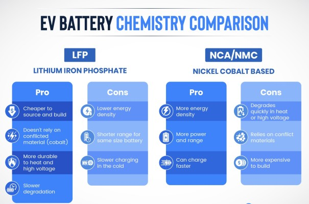
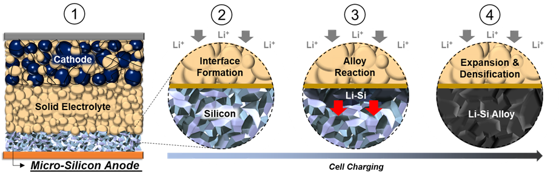
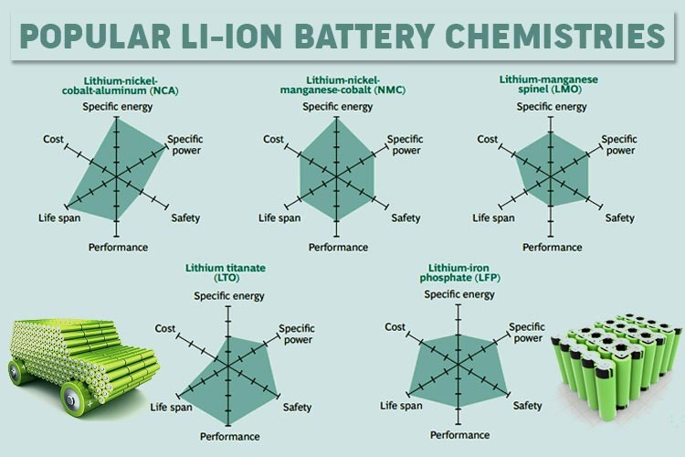
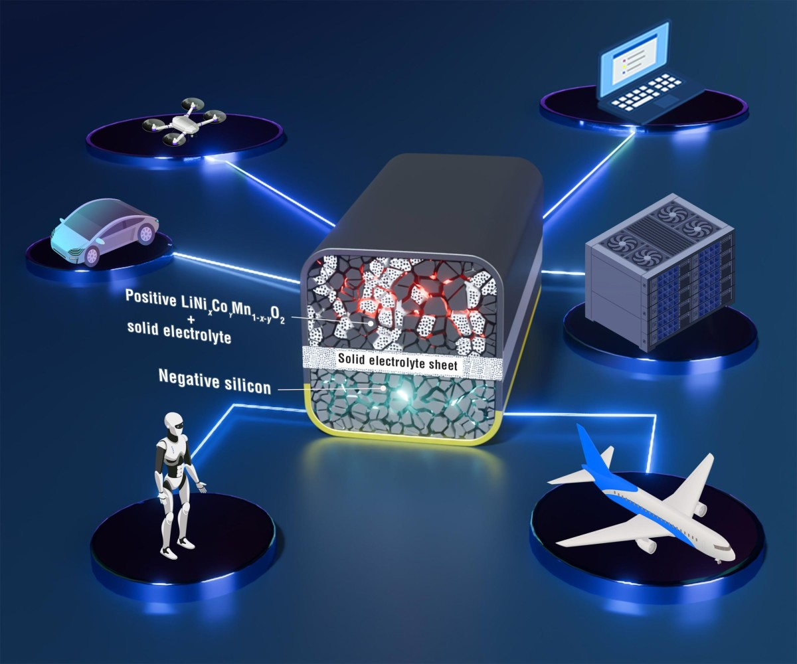
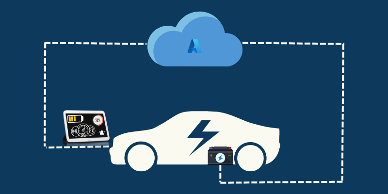

As we continue to navigate the complexities of energy storage and battery technology, significant advancements are transforming the industry. From the integration of silicon anodes to the development of smarter battery systems, the future of battery technology is more promising than ever. This newsletter highlights key trends and innovations shaping the battery sector.
Current lithium-ion batteries, which use graphite anodes, liquid electrolytes, and cathode materials such as NMC and LFP, are generally considered to be approaching their performance limits. Nonetheless, there are still methods to further enhance performance and save costs, starting with battery materials and design.

Switching from graphite to silicon
An intriguing substitute that can greatly increase performance and energy density is silicon anodes. Despite the fact that silicon has only ever been used as an anode at a weight percentage of less than 5%, its inherent volume expansion and the ensuing stability and cycle life problems have made it challenging to surpass silicon's use as an additive. But in the last ten to fifteen years, advances in silicon anode technology have made it possible for batteries to use 5–100% silicon in the anode.
Silicon anodes are revolutionizing lithium-ion batteries by offering higher energy density and faster charging capabilities compared to traditional graphite anodes. With a theoretical specific capacity of 4200mAh/g, silicon anodes can store more than ten times the energy of graphite, making them ideal for next-generation battery applications.

A new approach to cathode synthesis
It is probable that a comparable range of currently available commercial cathode materials will be utilized in future lithium-ion batteries. As an exception, LNMOs or LMFPs related to LFPs provide a different trade-off between high performance and low cost, but neither one improves energy density.
Manganese-rich lithium cathodes could offer slight improvements in energy density, but there has been little commercial development, and the field is moving slowly. The cathode material will typically improve gradually. Conversely, their synthesis techniques might be the source of the greatest advancements in cathode technology and innovation.
The current synthesis methods use a lot of water and reagents at high temperatures over extended periods of time (several days), which drives up production costs and environmental impacts.
Advancements in Silicon Anode Technology
Solid electrolytes and new electrolyte formulations
Although solid-state electrolytes have received a lot of attention in the field of electrolyte technology, liquid electrolyte systems can also be continuously improved through the use of novel additives and formulations. To help increase performance and safety, New Dominion Enterprises Inc. , for instance, is creating solvents and electrolyte additives based on nitrogen and phosphorus compounds. In particular, the solid electrolyte/electrode interface (SEI) formation, vapor pressure reduction, and thermal stability can all be enhanced by their electrolyte additive materials.
The company's long-term goal is to fully replace conventional organic solvents with their electrolyte systems, which could greatly increase safety. Still, solid-state batteries—which can greatly increase safety by substituting solid-state electrolytes for the flammable liquid electrolytes currently in use—remain the holy grail of battery technology for many electric vehicle manufacturers. Furthermore, the utilization of lithium metal anodes, which can raise energy densities above 1000 Wh/L, is possible with the solid-state electrolyte.

Beyond Lithium: Alternative Battery Chemistries
The dependency on lithium has driven researchers to explore alternative materials:
- Sodium-ion batteries: Abundant and cost-effective, but currently lower in energy density.
- Magnesium-ion and zinc-ion batteries: Promising long-term stability and safer chemistry.
- Graphene-based batteries: Ultra-fast charging and improved conductivity.
Solid-State Batteries: A Game Changer
Solid-state batteries replace the liquid electrolyte in traditional lithium-ion cells with a solid alternative. This technology offers higher energy density, faster charging, and improved safety by eliminating risks of fire or leakage. These batteries could reduce charging times to 80% in just 15 minutes, making them a game-changer for electric vehicles. Automakers like Toyota Motor Corporation and QuantumScape are investing heavily in solid-state research, with commercial production expected in the next decade.

The Rise of "Smarter Brains" in Batteries
Multiple aspects of battery performance can be enhanced through advancements in battery management systems (BMS) without having to deal with the difficulties associated with material development. The enhanced BMS will be extremely beneficial for other end applications, such as power tools or smartphones, in addition to the electric vehicle industry. While trade-offs between important performance traits like energy density, cycle life, fast charging, and safety are common in the evolution of batteries, it may be possible to improve all of these traits by making improvements to the BMS.

Artificial intelligence is revolutionizing battery performance and longevity. AI-driven battery management systems (BMS) can predict degradation, optimize charging cycles, and even prevent failures. Smart BMS ensures that EV batteries last longer while reducing charging time, making energy storage more efficient.
Sustainable Practices and Materials
The focus on sustainable materials and practices is crucial for environmentally conscious energy storage solutions. Silicon, being more abundant and sustainable than graphite, is at the forefront of these efforts.
Conclusion
The future of battery technology is marked by significant innovations, from silicon anodes to solid-state batteries and smarter systems. As the industry continues to evolve, these advancements will play a critical role in meeting global energy demands while promoting sustainability.